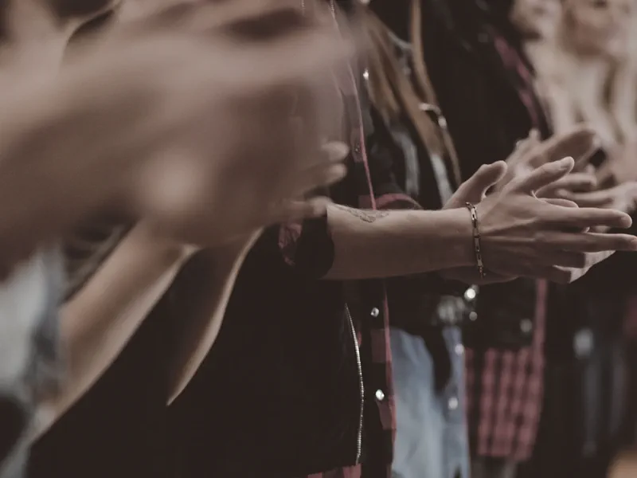
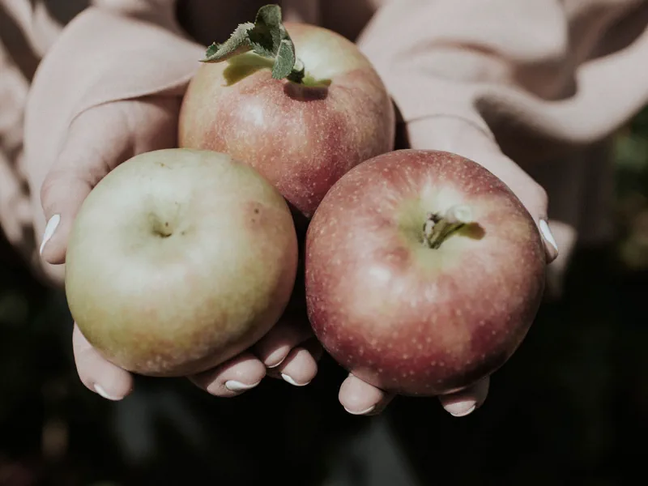

Worship in person
Join our Sunday Worship Celebration at 10:15 am at 4509 Springdale Road. An hour of music, scripture, and community.
Plan your visitA welcoming United Methodist church in East Austin, sharing the love of God with everyone, since 1863.
“Fear not, for I am with you always.” Wherever you are on the journey, there is a place for you here
Come as you are. Whether you visit in person, worship from home, or just want to listen first, we would love to welcome you.
Join our Sunday Worship Celebration at 10:15 am at 4509 Springdale Road. An hour of music, scripture, and community.
Plan your visitCan't make it to the building? Our celebrations are livestreamed and saved, so you can worship from wherever you are.
Watch the latest serviceSupport the ministry of St. Peter's and the neighbors we serve in East Austin. Every gift is a step out on faith.
Ways to giveOur Worship Celebration is warm, lively, and rooted in scripture. Come early, stay for fellowship, and bring whoever you like.
Sundays at 10:15 am. Doors open beforehand for coffee and a welcome. Plan for about an hour of worship.
4509 Springdale Road, Austin, TX 78723. Free parking on site. Everyone is welcome at the front door, come as you are.
Spirited music, an encouraging message, prayer, and a community that has been stepping out on faith together for generations.
More than a Sunday service, we're a family that worships, serves, and shares life together in East Austin.


Missed Sunday, or just want to know us before you visit? Press play on a recent Worship Celebration, then browse the full archive of past services.
St. Peter's has been part of East Austin for more than a century and a half, a Christian community gathered around one simple calling: to share the love of God with everyone who walks through the door.
We are glad you're worshiping with us today.
Generations have prayed, sung, served, and stepped out on faith in this place. Whether you've belonged for decades or you're only now considering a first visit, you are part of the welcome. Come and see.
Your generosity sustains worship, cares for our neighbors, and keeps the doors of St. Peter's open to all. Give securely online, or in person on a Sunday.
Here's everything you need for your first Sunday. Have a question before you come? Call the church office and a real person will help.
Join our mailing list for service updates and the occasional word of encouragement. Or follow along on social.
We'll only email you about St. Peter's. Unsubscribe anytime.
Thank you, you're on the list. We'll be in touch.